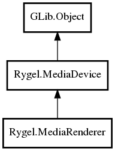

MediaDevice
MediaRenderer
Object Hierarchy:
Description:
public class MediaRenderer :
This class may be used to implement in-process UPnP-AV media renderers.
Call rygel_media_device_add_interface() on the RygelMediaRenderer to allow it to render media from that network interface.
See the <link linkend="implementing-renderers">Implementing Renderers</link> section.
Namespace: Rygel
Package: librygel-renderer
Content:
Properties:
Creation methods:
Methods:
Inherited Members:
All known members inherited from class Rygel.MediaDevice

All known members inherited from class GLib.Object